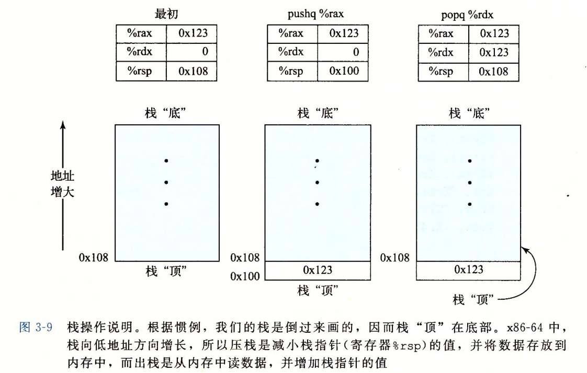
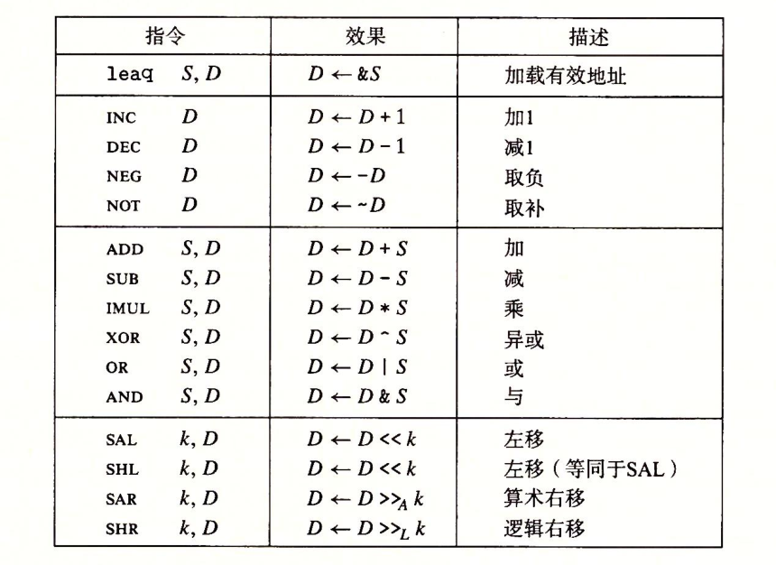
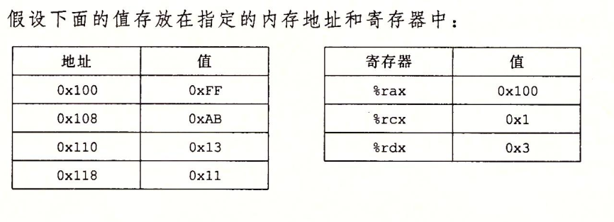
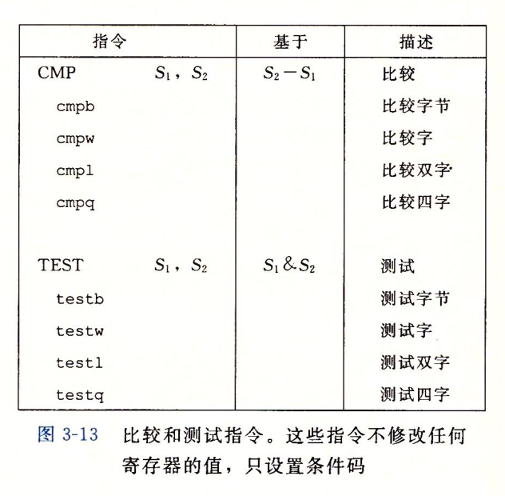
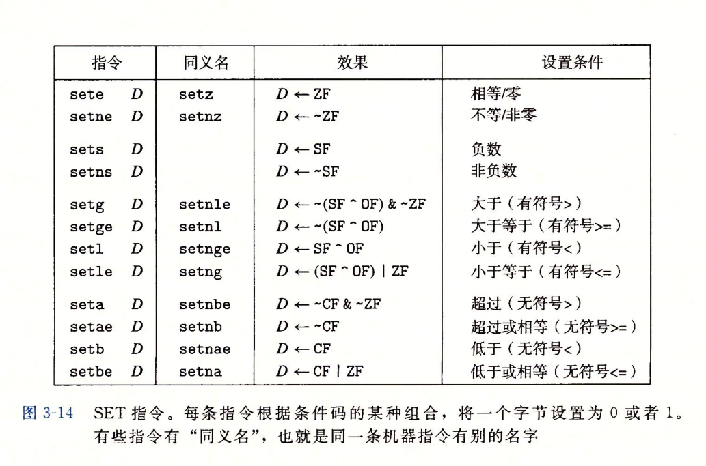

栈
栈是一种后进先出的数据结构，通过
push操作把数据压入栈中，通过pop操作删除数据。栈向下生长，栈顶的元素为低地址。

算数和逻辑操作

加载有效地址
leaq是将有效地址写入到目的操作数。
C语言代码
1 | long scale(long x, long y, long z){ |
编译为汇编
1 | scale : |
一元和二元操作

| 指令 | 目的 | 值 |
|---|---|---|
| addq %rcx, (%rax) | 0x100 | 0x100 |
| subq %rdx, 8(%rax) | 0x108 | 0xA8 |
| decq %rcx | %rcx | 0x0 |
移位操作
C语言
1 | long shift_left4_rightn(long x, long n) { |
汇编
1 | shift_left4_rightn: |
控制
用jump指令可以改变一组机器代码指令的执行顺序，jump指令指定控制应该被传递到程序的某个其他部分。
条件码
CF：进位标志。最近的操作使最高位产生了进位
ZF：零标志。最近的操作得出的结果为0
SF：符号标志。最近的操作得到的结果为负数
OF：溢出标志。最近的操作导致一个补码溢出–正溢出或负溢出

CMP指令根据两个操作数之差来设置条件码，且只设置条件码，不更新目的寄存器
访问条件码

C语言
1 | int comp(data_t a, data_t b) { |
汇编
1 | comp: |